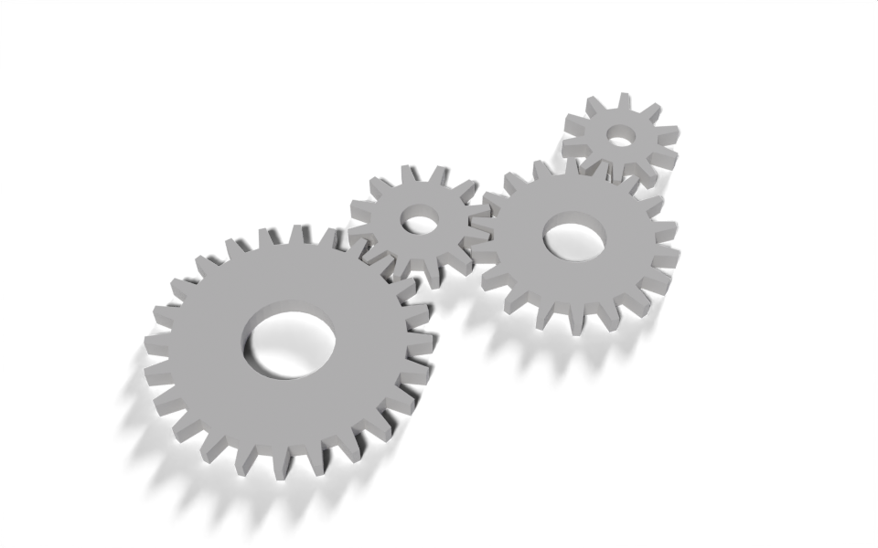

from math import cos, pi, sin, tau
from nodebpy import geometry as g
from nodebpy.builder import CustomGeometryGroup
from nodebpy.types import InputFloat, InputInteger
class Gear(CustomGeometryGroup):
"""A spur gear with trapezoidal teeth, sized by its tooth count and module."""
_name = "Gear"
_color_tag = "GEOMETRY"
def __init__(
self,
teeth: InputInteger = 16,
module: InputFloat = 0.1,
thickness: InputFloat = 0.2,
rotation: InputFloat = 0.0,
):
super().__init__(
teeth=teeth, module=module, thickness=thickness, rotation=rotation
)
def _build_group(self, tree):
teeth = tree.inputs.integer("Teeth", 16, min_value=4)
module = tree.inputs.float("Module", 0.1, min_value=0.0)
thickness = tree.inputs.float("Thickness", 0.2, min_value=0.0)
rotation = tree.inputs.float("Rotation", 0.0, subtype="ANGLE")
with g.Frame("Tooth Profile"):
# every tooth is four points: up the leading flank, across the tip,
# down the trailing flank; the root carries on to the next tooth
pitch = module * teeth / 2
tip, root = pitch + module, pitch - 1.25 * module
index = g.Index()
corner = index % 4
fraction = g.IndexSwitch.float(corner, [0.0, 0.15, 0.35, 0.5])
radius = g.IndexSwitch.float(corner, [root, tip, tip, root])
angle = (index // 4 + fraction) * tau / teeth + rotation
position = g.CombineXYZ(radius * angle.cos(), radius * angle.sin())
outline = g.CurveCircle(resolution=teeth * 4) >> g.SetPosition(
position=position
)
with g.Frame("Solid"):
bore = g.CurveCircle(radius=root * 0.4)
(
g.JoinGeometry([outline, bore])
>> g.FillCurve()
>> g.ExtrudeMesh(offset=g.CombineXYZ(z=thickness), individual=False)
>> tree.outputs.geometry("Gear")
)
# each gear in the train: its tooth count and the direction it sits in,
# seen from the gear before it. Neighbours turn in opposite directions, so
# gears two apart turn the same way and must not touch, or the train locks.
TRAIN = [(24, 0.0), (12, 0.6), (18, -0.4), (10, 0.9)]
with g.tree("Gear Train", is_modifier=True) as tree:
module = tree.inputs.float("Module", 0.1, min_value=0.0)
thickness = tree.inputs.float("Thickness", 0.2, min_value=0.0)
spin = tree.inputs.float("Spin", 0.0, subtype="ANGLE")
material = tree.inputs.material("Material")
gears = []
x = y = phase = 0.0 # centre (in modules) and rotation at zero spin
ratio = 1.0 # how fast this gear turns relative to the first
previous = None
for teeth, direction in TRAIN:
if previous:
x += (previous + teeth) / 2 * cos(direction)
y += (previous + teeth) / 2 * sin(direction)
# put a gap of this gear where a tooth of the previous one points
phase = direction + pi + previous / teeth * (direction - phase)
ratio *= -previous / teeth
previous = teeth
gear = Gear(teeth, module, thickness, rotation=phase + spin * ratio)
gears.append(gear >> g.TransformGeometry(translation=module * (x, y, 0.0)))
(
g.JoinGeometry(gears)
>> g.SetMaterial(material=material)
>> tree.outputs.geometry("Geometry")
)Gear Train
geonodes
custom groups
curves
A gear group driven by tooth count and module, and a train of gears that mesh and turn together.

Download .blend The scene in this image: the node trees, materials, camera and lights.
A Gear group draws one spur gear from its tooth count and module, the size of a tooth. Gears with the same module always mesh, so the modifier can place a chain of them from nothing more than a list of tooth counts and directions, and turn the whole chain with a single Spin input.
How it works
One gear. The outline starts as a circle with four points per tooth. For point index, index // 4 is the tooth and index % 4 is the corner within it: the two root corners and the two tip corners.
- Two Index Switch nodes look up the corner’s angle within the tooth and its radius. The items are passed as Python lists, and an item can be a number or a socket:
rootandtipare computed from the inputs. - The angle and radius become a position with
angle.cos()andangle.sin(), socket methods that add Math nodes. - A smaller circle for the bore is joined to the outline, and Fill Curve’s even-odd rule turns the pair into a ring. Extrude Mesh gives it thickness.
The train. The loop over TRAIN runs in Python. It works out each gear’s centre from the previous gear’s, and the starting angle that puts a gap of the new gear where a tooth of the previous one points. Neighbouring gears turn in opposite directions, so gears two apart turn the same way; the directions in TRAIN zig-zag to keep those apart, since if they touched the train would lock. The positions and angles are plain floats; the only socket is spin, which each gear multiplies by its speed ratio, -previous / teeth times the previous gear’s ratio. The sign flips at every mesh.
Mixing Python arithmetic and sockets is the useful idea here: anything known while the script runs stays a Python number, and only values that can change from the modifier panel become nodes. The tree has four Gear nodes and a few Math nodes, not a node for every intermediate number.
Node trees
The modifier:
Inside the Gear group:
Original
Based on the gear modifiers in demos/gears.py in geonodes, which also round and bevel the teeth and can chain gears across separate objects by reading each other’s parameters from a bundle. This version keeps to straight-sided teeth and builds the chain in one tree.